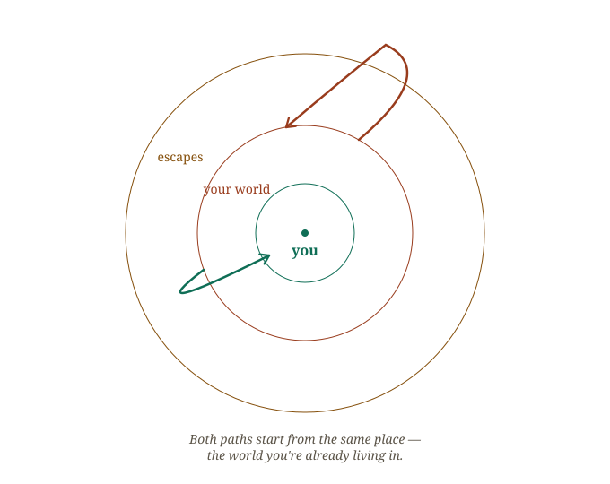
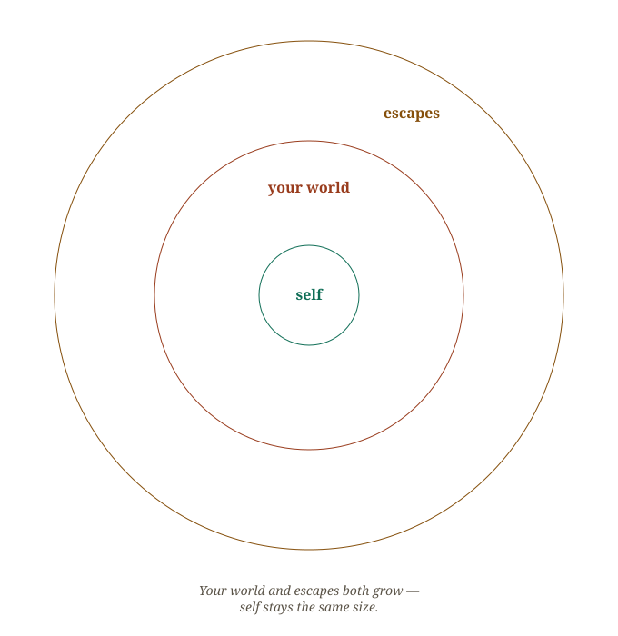
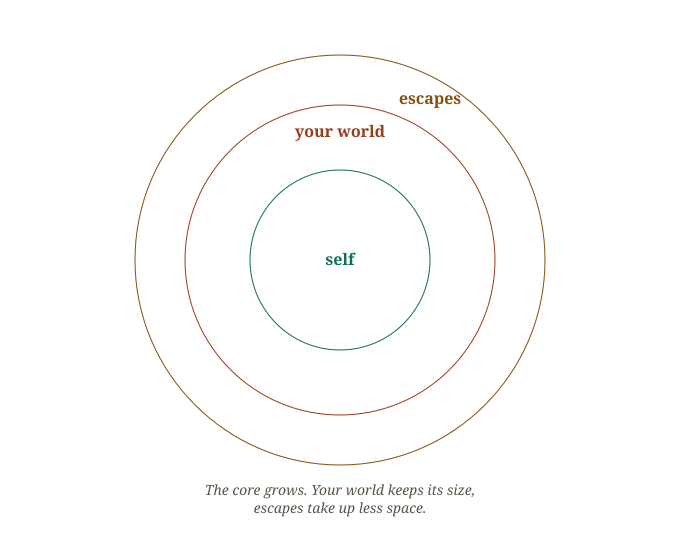

The eye of the storm
People feel that stepping away from their world is a way to recharge, to reset. "Away" is a direction, and it points further from you, not closer. The activities that promise distance only expand your range of distractions. You eventually have to return to your world. And even if you come back with a little more energy to handle things, you're still handling the same world you left — except now you have another escape. Another direction to run toward when you feel overwhelmed.

The words we use to describe what we need already decide which direction we're facing. "Getting away". "Escaping". "Stepping away from it all". Every one of those phrases points outward, away from yourself, before you've even packed a bag. If the goal is actually to return to yourself, the language has to point inward too.
I believe that you have to step into the eye of the storm. Not away from it, not away from your world — into it, and through it, to what's at the center. The center of your world. Not deeper into your work, your career, your business, your school. Those are elements of your world, but they aren't your life. People can get so caught up that they mistaken these activities and spaces as their world — their life. But even when these things change, it doesn't mean you change. You are still you. You're may or may not be growing with each change, but you are fundamentally at the root of it all.

You are at the center of your world. It's the ability to really sit within that and listen to what you need. Not the distractions. Not what you think is your world, because that's what's keeping you distracted. But you. How are you? What do you need? Where are you with yourself?
Stepping into the center of your world is the most sustainable and scalable thing you can do for yourself. Everything else will reflect that energy and time spent on self, because it is you who is at the center of your world.

None of this means the activity itself is wrong. It can still look like a vacation, a trip, time away from your usual routine. What changes is the phrasing you carry into it. Are you stepping into that space to hear yourself more clearly, to calm your nervous system? Or are you stepping away, escaping, running from your world? The activity can look identical from the outside. But the words you choose going in decide which direction you're actually walking — toward yourself, or further from it.